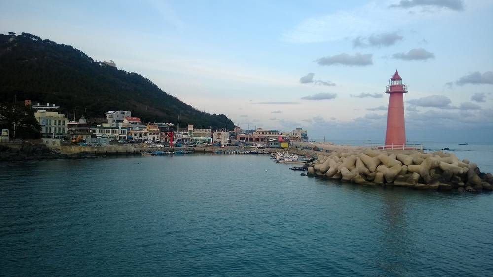

청사포 해상풍력 절차 재개에 해운대구의회 다시 반대…40MW로 줄였지만 해안선 750m 거리 그대로

사업자 10월 일반해양이용협의서 제출…구의원 5분 발언에서 경관·소음·어업 피해 들어 철회 요구, 구의회는 2021·2022년에도 백지화 결의
부산 해운대구 청사포 앞바다 해상풍력 사업이 행정절차를 다시 밟자 해운대구의회에서 사업 철회 요구가 나왔다. 김민정 구의원(국민의힘)은 9일 제297회 정례회 제1차 본회의 5분 자유발언에서 주민 동의 없이 사업을 밀어붙여서는 안 된다며 구청이 인허가 검토 권한을 최대한 써서 대응하라고 요구했다. 사업은 10MW급 발전기 4기, 모두 40MW 규모로, 2017년 처음 허가를 받은 뒤 반발에 막혀 있다가 사업자가 발전기 수를 줄이고 지분 구조를 바꿔 지난 10월 구청에 일반해양이용협의서를 냈다. 김 의원은 규모가 줄었어도 해안선에서 750m 안팎 거리에 대형 구조물이 들어서는 점은 같다며 경관 훼손과 저주파 소음, 어장과 해상 교통 피해, 관광 상권 타격을 들고 과거 환경영향 조사 자료를 다시 검증해야 한다고 했다. 해운대구의회는 2021년과 2022년에도 주민 수용성 확보와 사업 백지화를 요구하는 결의안을 낸 바 있다.
시민에너지 관점
2017년 허가 뒤 9년 가까이 첫 삽을 뜨지 못한 사업이 발전기 수와 지분 구조만 바꿔 다시 나왔지만, 주민이 그 지분에 들어갈 길이 있는지는 아직 알려진 것이 없다. 덴마크는 2009년부터 2020년까지 새 풍력 사업 지분의 20%를 인근 주민에게 먼저 팔도록 했고, 국내에서도 주민이 출자해 수익을 나누는 풍력이 늘고 있어 반대가 곧 재생에너지 거부라고 볼 수는 없다. 경관·소음·어업 피해를 객관적으로 다시 따지되, 그 과정에 어민과 주민이 처음부터 참여하고 소유와 수익을 나누는 구조가 함께 논의돼야 갈등이 풀린다. 해운대구는 협의 절차에서 환경 자료 재검증과 함께 사업자에게 주민 참여·이익공유 계획을 공개하라고 먼저 요구해야 한다.
출처: 포인트경제 2026-11-09 윤선영 원문 보기
青沙浦の洋上風力が手続き再開、海雲台区議会が再び反対…40MWに縮小も海岸線から750mの距離は変わらず
事業者が10月に一般海域利用協議書を提出…区議員が5分発言で景観・騒音・漁業被害を挙げ撤回を要求、区議会は2021・2022年にも白紙化を決議
釜山・海雲台区の青沙浦沖で進む洋上風力事業が行政手続きを再開したことを受け、海雲台区議会で事業撤回を求める声が上がった。キム・ミンジョン区議員（国民の力）は9日、第297回定例会第1次本会議の5分自由発言で、住民の同意なしに事業を押し進めてはならないとし、区庁が許認可の検討権限を最大限に使って対応するよう求めた。事業は10MW級の発電機4基、計40MW規模で、2017年に初めて許可を受けた後、反発で止まっていたが、事業者が発電機の数を減らし持分構造を変えて、10月に区庁へ一般海域利用協議書を提出した。キム議員は、規模は縮小しても海岸線から750m前後の距離に大型構造物が建つ点は同じだとして、景観の損傷と低周波騒音、漁場と海上交通への被害、観光商圏への打撃を挙げ、過去の環境影響調査の資料を改めて検証すべきだと述べた。海雲台区議会は2021年と2022年にも、住民の受容性確保と事業の白紙化を求める決議案を出している。
市民エネルギーの視点
2017年の許可から9年近く着工できなかった事業が、発電機の数と持分構造だけを変えて再び出てきたが、住民がその持分に加わる道があるのかはまだ明らかになっていない。デンマークは2009年から2020年まで、新しい風力事業の持分の20%を近隣住民に先に売るよう義務づけており、韓国でも住民が出資して収益を分け合う風力が増えているため、反対がそのまま再生可能エネルギーの拒否だとは言えない。景観・騒音・漁業被害を客観的に検証し直すと同時に、その過程に漁業者と住民が最初から参加し、所有と収益を分け合う仕組みが一緒に議論されてこそ対立は解ける。海雲台区は協議手続きの中で、環境資料の再検証とともに、事業者に住民参加・利益共有の計画を公開するよう、まず求めるべきだ。
出典: 포인트경제 2026-11-09 윤선영 原文を読む
青沙浦海上风电重启程序，海云台区议会再度反对…规模缩至40MW，但距海岸线750米未变
开发商10月提交一般海域利用协议书…区议员在5分钟发言中以景观、噪音、渔业受损为由要求撤回，区议会2021、2022年也曾决议要求取消
韩国釜山海云台区青沙浦近海的海上风电项目重新启动行政程序后，海云台区议会出现了要求撤回项目的声音。区议员金敏贞（国民力量党）9日在第297次定例会第一次全体会议的5分钟自由发言中表示，不应在未获居民同意的情况下强推项目，并要求区政府充分行使许可审查权限加以应对。该项目由4台10MW级发电机组成，总规模40MW，2017年首次获得许可后因反对而停滞，开发商减少发电机数量、调整股权结构后，于今年10月向区政府提交了一般海域利用协议书。金议员指出，规模虽已缩小，但大型构筑物距海岸线仅约750米这一点没有改变，并列举了景观破坏、低频噪音、渔场和海上交通受损以及旅游商圈受冲击等问题，要求重新核查过去的环境影响调查资料。海云台区议会在2021年和2022年也曾通过决议，要求确保居民接受度并取消该项目。
市民能源视角
自2017年获批以来近9年未能开工的项目，只改了发电机数量和股权结构便再次推出，但居民能否加入这部分股权，至今没有任何说明。丹麦在2009年至2020年间要求新风电项目先向附近居民出售20%的股份，韩国国内由居民出资、分享收益的风电也在增加，因此不能把反对直接等同于拒绝可再生能源。在客观重新核查景观、噪音和渔业损害的同时，只有让渔民和居民从一开始就参与其中，并一同讨论分享所有权和收益的结构，矛盾才能化解。海云台区应在协议程序中，在重新核查环境资料的同时，首先要求开发商公开居民参与和收益共享计划。
来源: 포인트경제 2026-11-09 윤선영 查看原文
Haeundae Council Again Opposes Cheongsapo Offshore Wind as Permitting Resumes; Project Cut to 40MW but Still About 750m From Shore
Developer filed a sea-use consultation in October; a councillor cited landscape, noise and fishing damage in calling for withdrawal, and the council already passed resolutions to scrap it in 2021 and 2022
As an offshore wind project off Cheongsapo in Busan's Haeundae district resumes administrative procedures, a call to withdraw it has come from the Haeundae District Council. In a five-minute speech at the first plenary session of the council's 297th regular meeting on the 9th, councillor Kim Min-jeong (People Power Party) said the project must not be pushed through without residents' consent and urged the district office to use its permit review powers to the full. The project consists of four 10MW turbines, 40MW in total; after first receiving a permit in 2017 it stalled amid opposition, and the developer cut the number of turbines, restructured its ownership and submitted a general sea-use consultation document to the district office in October. Kim said that even at a smaller scale, large structures would still stand roughly 750m from the shoreline, citing damage to the landscape, low-frequency noise, harm to fishing grounds and maritime traffic and the blow to tourism businesses, and called for past environmental impact survey data to be re-examined. The council also adopted resolutions in 2021 and 2022 demanding resident acceptance and the scrapping of the project.
Citizen Energy View
A project that has not broken ground in nearly nine years since its 2017 permit has returned with only its turbine count and ownership structure changed, yet nothing has been said about whether residents can take part in that ownership. From 2009 to 2020 Denmark required new wind projects to offer 20% of their shares to nearby residents first, and community-financed wind projects that share profits are growing in Korea too, so opposition cannot simply be read as rejection of renewables. The landscape, noise and fishing impacts should be objectively re-examined, but the conflict will only ease if fishers and residents take part from the start and a structure for sharing ownership and returns is discussed alongside. In the consultation process, Haeundae should first require the developer to disclose a plan for resident participation and benefit-sharing, together with a re-examination of the environmental data.
Source: 포인트경제 2026-11-09 윤선영 Read the original